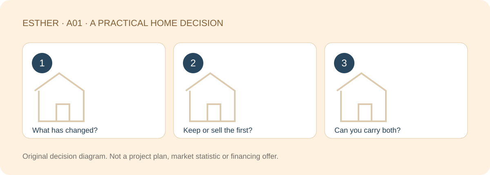

A HOME THAT FITS YOUR LIFE
Buying a Second Home in Johor Bahru: When Does It Make Sense?
Sources checked：2026-10-26 · By Esther, Real Estate Negotiator

Direct answer
A second home makes sense when it solves a meaningful need your current home cannot reasonably meet, and you can carry the financial commitments without relying on an optimistic outcome. Start with the change in your life, then compare keeping, selling or improving your existing home before shortlisting another property.
Browse article sections
What has changed since you bought your first home?
Perhaps your household now needs a proper work room, your parents need to live closer, or weekends in JB have become a regular part of family life. Write the improvement as something you can test: a usable room, a simpler school run, easier upkeep or more privacy. “A nicer address” alone is difficult to evaluate.
Within an RM600K–RM1.5M search, the best upgrade need not use the whole budget. A smaller home that suits your routine can be a more useful second purchase than a larger home with costs and chores you do not want.

Separate a home upgrade from an investment decision
| Purpose | Main test | Cost easily missed |
|---|---|---|
| Moving in permanently | Will this improve ordinary weekdays? | Moving, furnishing and transition costs |
| Family or two-country use | Who will stay and how often? | Fixed expenses during empty periods |
| Long-term asset planning | Can you sustain the holding period? | Vacancy, repairs and eventual disposal costs |
A property may serve more than one purpose, but each needs its own assumptions. A home reserved for your parents cannot also be treated as freely available for tenants whenever you need income. Avoid depending on unconfirmed rent or future price growth to make the purchase work.
Give the first home a fresh review
Collect its outstanding loan balance, actual expenses, repair history and relevant ownership documents. If it is rented out, separate rent received from net cash flow after expenses and allow for gaps between tenants. Asking rents in advertisements are not your income.
Compare three real options: retain it and fund both homes; sell and manage the timing of proceeds; or improve the existing home instead. An expected selling price is not available cash until the transaction and financing arrangements support it. Ask your solicitor about settlement, applicable taxes and timing rather than assuming a seamless handover.

Run one household cash-flow plan for both homes
List both loans, shared-building charges where relevant, taxes, insurance, repairs and the extra travel or family-care costs. Then test a period of lower income, an exchange-rate change if you earn SGD, or a sizeable repair. The question is how much flexibility remains after the second purchase.
Maybank’s Home²u FAQ notes that financing depends on factors including the product and financing record. Do not carry the first home’s approved margin into the next application. PIDM’s DSR explanation is useful background, but an eligibility result is not a complete household affordability assessment.
Give retention a clear purpose
If the first home supports family care while the next supports work, keeping both may serve a practical role. If the first has no planned use or verified net income, write down the separate reason for retaining it. Compare two complete options rather than letting its original purchase price decide today’s choice.
Write a one-page brief before booking viewings
- Name three improvements the next home must deliver.
- State the first home’s plan: retain, sell or still to be assessed.
- Set the cash reserve and monthly breathing room you want to keep.
- Record the conditions that would make you postpone or walk away.
Use this brief to compare a small number of relevant homes. If the proposed purchase improves the showroom experience but not these decisions, it is reasonable to wait. The aim is a useful next step in your life, not simply another property on paper.

Frequently asked questions
Must a second home be bigger?
No. Accessibility, a better layout, less upkeep or a more practical family routine can matter more than extra floor area.
Can rent from the first home cover the second loan?
Do not assume it will. Review documented net receipts, vacancy and repair exposure, then test whether both commitments remain sustainable.
Will my next financing margin match my first loan?
Not necessarily. Ask the lender for terms based on your current records, the property and its valuation.
Can I talk to Esther before deciding whether to sell?
Yes. Start with the two options and their timing, then discuss a focused search rather than committing to a project first.
Compare JB second-home options around your life
Share the part of your home search you want to clarify, your budget range and a suitable time to chat. A viewing or appointment is confirmed only after arrangements are agreed.
Discuss my home search with EstherThe editable message identifies this guide. Nothing is sent until you choose to send it. No identity or financial documents are needed in an initial chat.Sources and scope
Checked：2026-10-26。Practical comparisons and checklists are original editorial guidance, not market statistics, a professional inspection or personalised legal, tax or financing advice. Project details and transaction-specific requirements need separate verification. Historical source dates do not establish a new policy announcement. No loan approval, rental, appreciation, search ranking or AI citation is guaranteed.